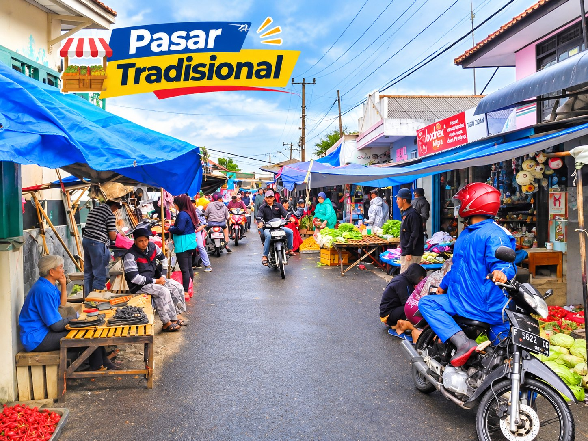
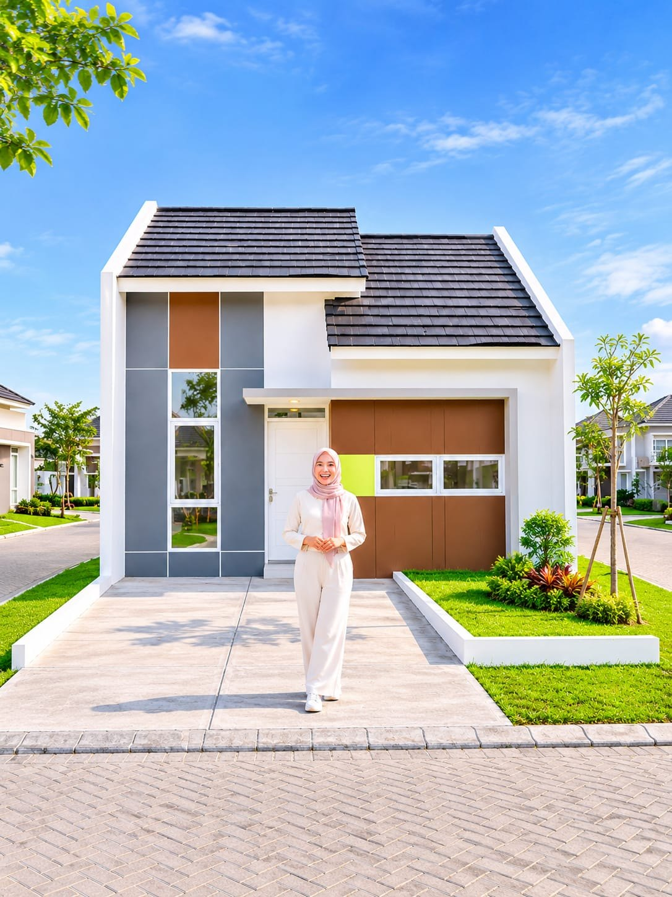
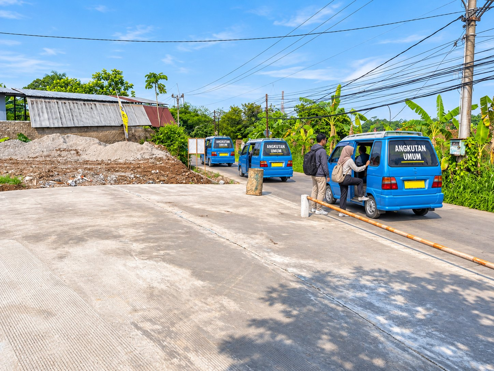
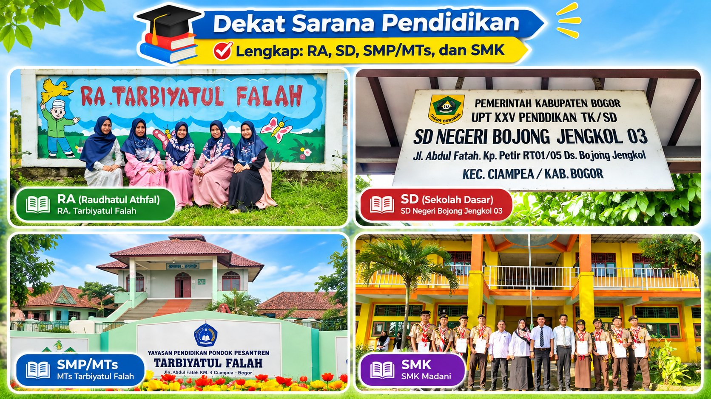
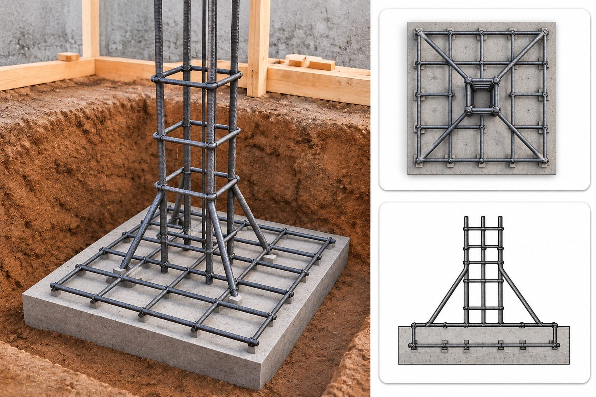
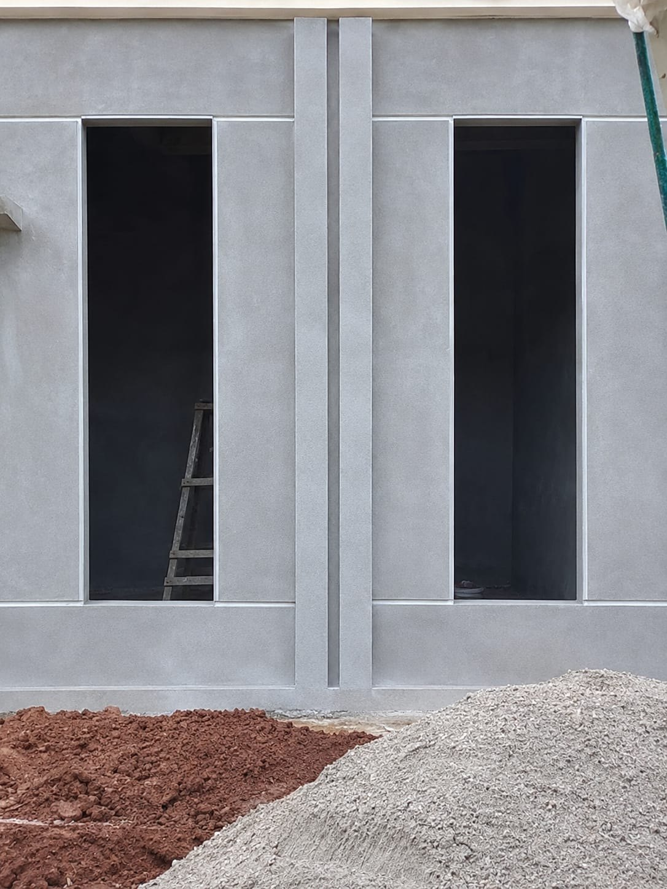
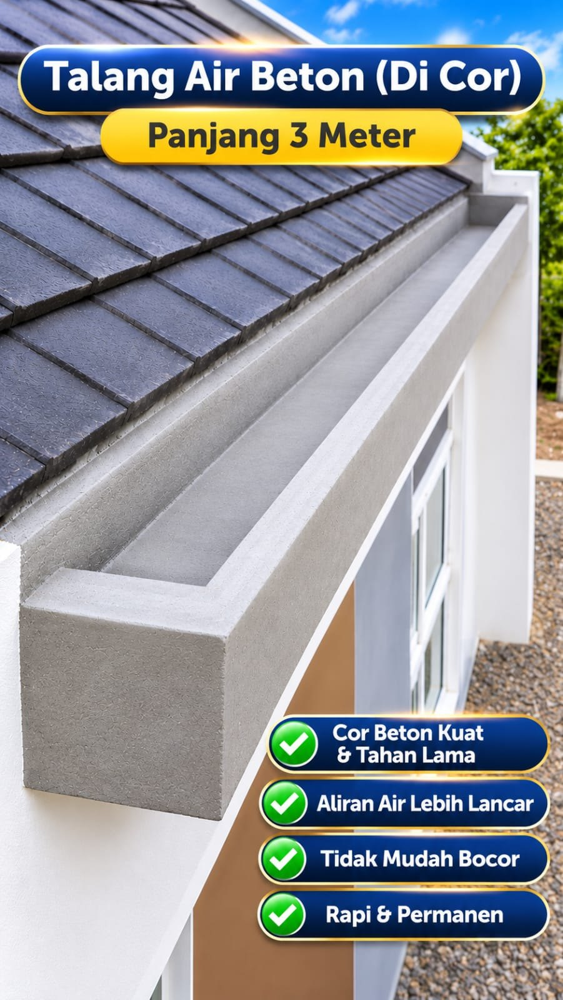
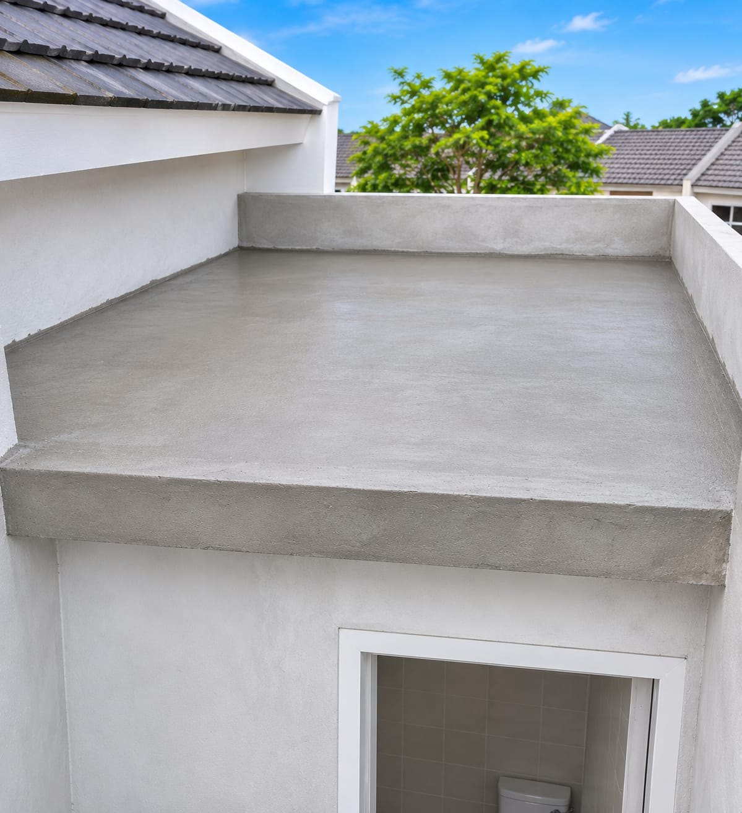

Lingkungan berkembang
Kawasan sekitar memiliki aktivitas warga dan pasar tradisional untuk mendukung kebutuhan sehari-hari.
Kenali Bumi Indah Lestari 2, pilihan hunian di Desa Cinangka, Kecamatan Ciampea, Kabupaten Bogor. Lihat foto rumah, fasilitas sekitar, spesifikasi bangunan, dan hitung simulasi cicilan bersama PANDAWA PROPERTY.

Bumi Indah Lestari 2 hadir di kawasan Cinangka, Ciampea, Bogor dengan lingkungan yang berkembang.

Kawasan sekitar memiliki aktivitas warga dan pasar tradisional untuk mendukung kebutuhan sehari-hari.

Akses kawasan dilalui angkutan umum untuk membantu mobilitas sehari-hari.

Dekat sarana pendidikan, termasuk SMK Madani.
Bumi Indah Lestari 2 berada di Desa Cinangka, Kecamatan Ciampea, Kabupaten Bogor. Informasi ini dapat menjadi referensi bagi Anda yang sedang mencari rumah subsidi di Bogor Barat, rumah murah di Kabupaten Bogor, atau hunian di kawasan Ciampea. Untuk memastikan jarak dari Cibatok, Dramaga, Bogor Kota, maupun lokasi aktivitas Anda, silakan periksa alamat dan rute sebelum melakukan survei.
Foto gerbang, rumah, jalan lingkungan, dan bagian dalam rumah.
Kenali bagian rumah dan spesifikasi konstruksi melalui dokumentasi foto.

Dokumentasi pondasi dan rangka tulangan cakar ayam.

Dokumentasi pengerjaan dinding ganda pada sisi rumah.

Talang air beton dengan panjang sekitar 3 meter sesuai materi foto.

Area dak cor yang disiapkan sebagai tempat toren air.
Foto pondasi dan detail konstruksi merupakan dokumentasi/ilustrasi spesifikasi. Detail teknis aktual mengikuti kondisi unit dan pelaksanaan di lapangan.
Gunakan angka cicilan acuan yang disampaikan. Hasil simulasi bukan persetujuan kredit dari bank.
Acuan contoh SP3K BTN yang diberikan.
Angka 20 tahun sesuai contoh SP3K BTN yang diberikan. Nominal final mengikuti persetujuan bank.
Masukkan penghasilan bersih per bulan untuk melihat batas cicilan simulasi.
Persentase ini hanya panduan. Bank tetap menilai penghasilan yang dapat dibuktikan, pekerjaan, utang berjalan, SLIK, dan dokumen lainnya.
Dua contoh SP3K BTN yang diberikan tidak mencantumkan nominal DP. Status promo tanpa DP harus dikonfirmasi kepada PANDAWA PROPERTY dan bank. DP Rp0 tidak berarti seluruh biaya awal otomatis Rp0.
Contoh dana awal terdiri dari notaris Rp250.000, administrasi Rp500.000, provisi Rp895.750, dan angsuran pertama. Ini bukan nominal DP.
Tanyakan ketersediaan unit, persyaratan KPR subsidi, ketentuan promo tanpa DP, dan simulasi pembiayaan kepada tim kami.
Hubungi Admin WhatsApp ↗